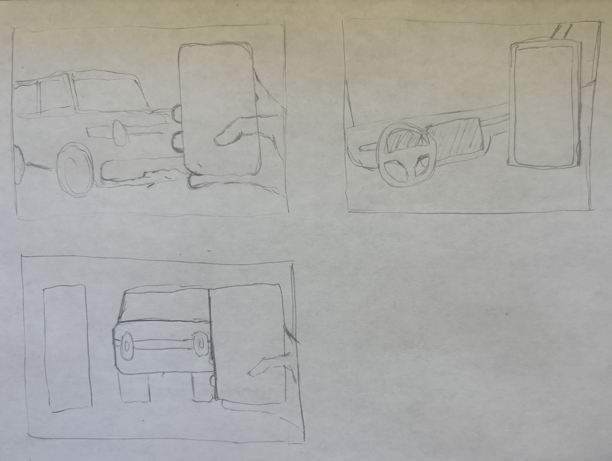
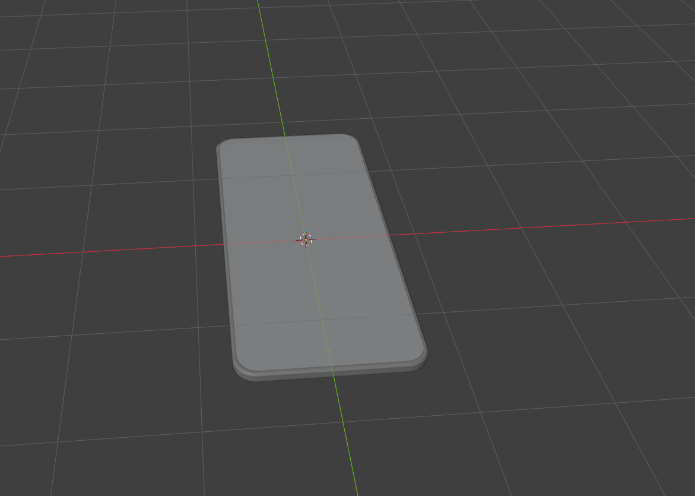
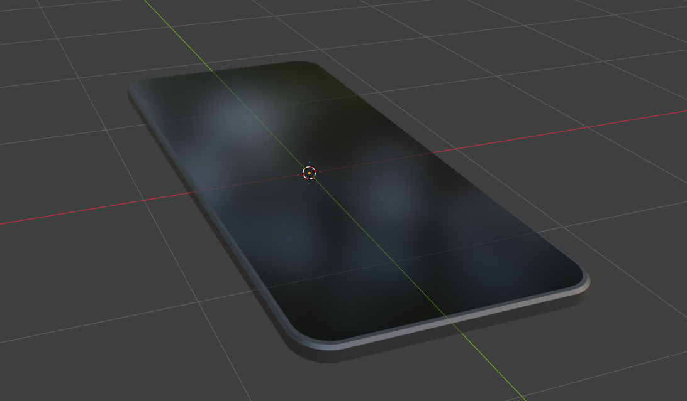
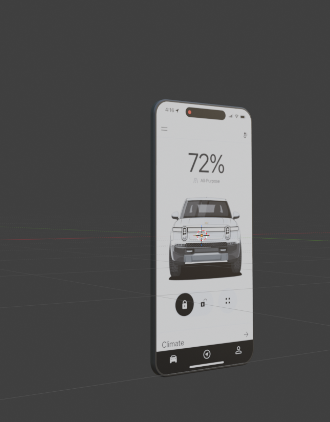
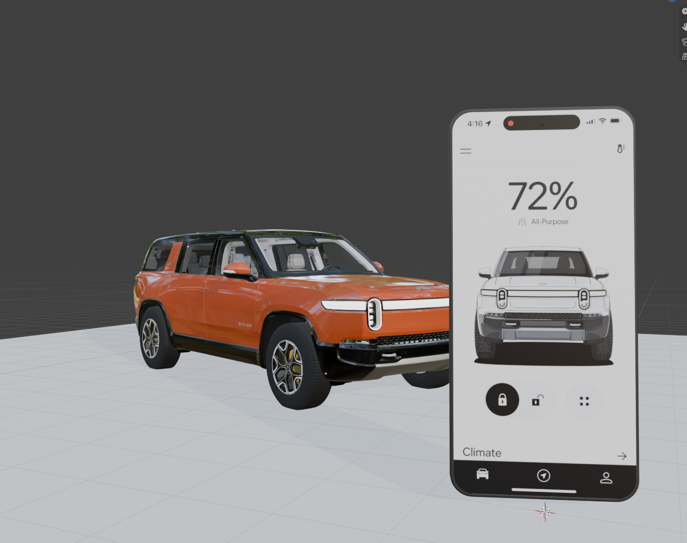
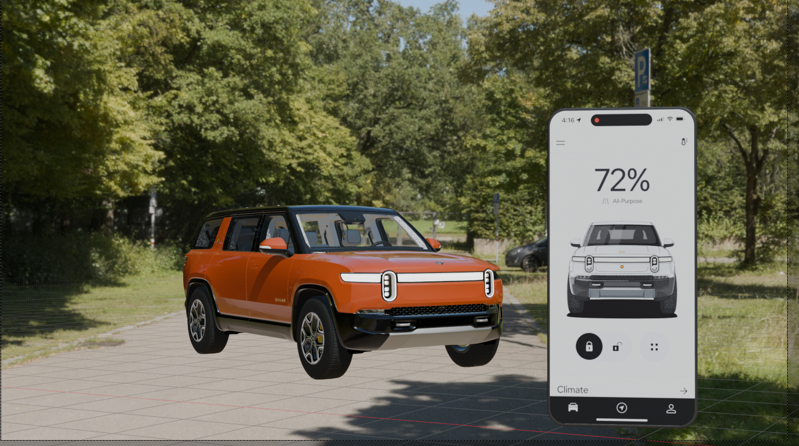

For this project, I am exploring the relationship between the Rivian mobile application and the physical vehicle. During the first week, I focused on creating the main components in Blender and establishing an initial scene.
Before working in Blender, I created three sketches exploring different compositions involving the Rivian vehicle and a smartphone. I decided to focus on the exterior interaction, with the smartphone in the foreground and the vehicle in the background.

I started by modeling a basic smartphone in Blender. I used a plane and adjusted its proportions to create the body of the phone. I also experimented with vertex beveling to create consistent rounded corners before adding thickness.

After creating the basic phone shape, I added materials to distinguish the screen from the body. I also adjusted the edges to make the phone look more realistic.

Once the phone model was complete, I imported my Rivian mobile app interface as an image texture. This allowed me to display my interface design directly on the 3D smartphone model.

Instead of creating the vehicle from scratch, I downloaded an existing Rivian R1S model from Sketchfab and imported it into Blender. I then positioned the vehicle alongside the smartphone to establish the composition.

I added an outdoor parking lot HDRI to create a more realistic environment for the vehicle. The HDRI helped improve the lighting and reflections on the Rivian model.

This is my current Blender scene for Week 1. It shows the Rivian vehicle alongside the mobile application. The scene is still a work in progress, but it establishes the main components and overall composition for further development.

During this project, I learned how to create a smartphone model, apply image textures, import existing 3D models, and work with HDRI environments in Blender.
One challenge I encountered was creating consistent rounded corners for the phone. I also had some difficulty matching the vehicle's position with the HDRI environment. Moving forward, I plan to improve the lighting, composition, and overall presentation of the scene.
Blender Tutorial: YouTube Tutorial
Rivian R1S 3D Model: Sketchfab - Rivian R1S (2022)